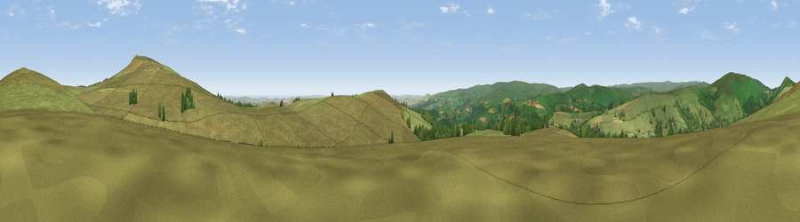

Viewpoint near Buckland in the Moor
#7927 in England · top 15% of its area beats it · near Buckland in the MoorWhere it is
The exact computed spot (SX 73275 74825). Click the marker for map links.
The view, rendered

A 360° render of this exact spot computed from the terrain model, tree cover and land cover — summer colours, afternoon light, calibrated against photographs of famous viewpoints. Real trees, hedges and buildings will differ in detail.
The panorama
Grey silhouette: terrain skyline in each direction (720 bearings, Earth curvature and refraction included). Dashed green: skyline with trees (+15 m) and buildings (+8 m) as obstacles. Blue strip: how far the ground is visible on each bearing.
Where the view opens
Wedge length = distance to the farthest visible ground on that bearing (vegetation-aware). Rings at 10, 25 and 50 km.
What fills the view
90% grassland · 8% woodland · 1% cropland ·
Angular shares of the visible panorama (visual magnitude), not map area. Landscape diversity 0.17 (0–1 Shannon).
Key numbers
More beautiful places nearby
The staircase of upgrades: each row has a higher view potential than everything closer. Driving times are estimates from straight-line distance, calibrated against real road routing — check an actual route before setting out.
| Place | Direction | Drive | Score |
|---|---|---|---|
| Rippon Tor | ENE · 2 km | ~4 min | 78.5 |
| Viewpoint near Buckland in the Moor | S · 2 km | ~5 min | 80.7 |
| Shell Top | SW · 17 km | ~30 min | 81.8 |
| Beacon Hill | SE · 18 km | ~31 min | 82.3 |
| Viewpoint near Stokeinteignhead | ESE · 20 km | ~34 min | 84.1 |
| Viewpoint near Hope | S · 36 km | ~55 min | 84.4 |
| High Peak | ENE · 39 km | ~58 min | 85.3 |
| Pencarrow Head | WSW · 63 km | ~85 min | 86.0 |
50.55940, -3.79045 · source: screening · position refined by local search. Computed location — check access rights before visiting.